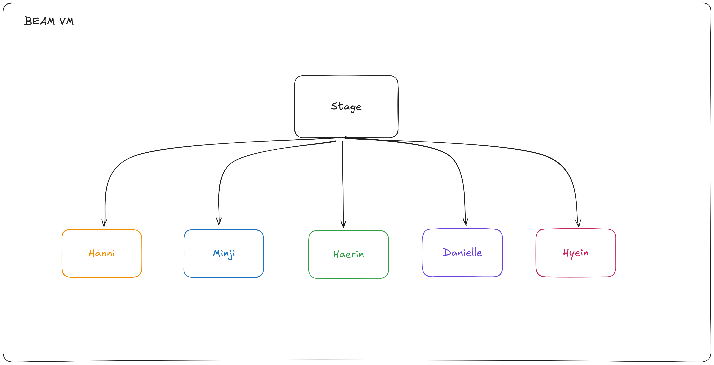

"NewJeans, and the Magic of Crashing Gracefully"
💧 What is Elixir?
- 💥 Not Ruby — but looks a bit like it!
- ⚡ Built for real-time, always-on apps
- 🧠Runs on the super-reliable BEAM (Erlang VM)
- 🧠Powers big apps like Discord & WhatsApp
Designed by

José Valim

🧱 What is Fault Tolerance?
🩰 Fault tolerance is like the secret choreography of the K-pop world:
Even if one dancer slips, the show must go on — flawlessly.
🤠What If a NewJeans Member Slips?
OOP style:
- 🧠Stop the show, run checks, fix hair, fix shoes
- 😓 Hope nothing else breaks while doing that
- 📉 The audience might get bored or leave
OOP style:
begin
raise "error"
rescue => e
puts "Caught error: #{e}" # Handles error manually
end
Elixir style:
- 💥 Let her fall (aka crash)
- 🧑‍💼 Supervisor quietly sends in backup (or restarts her!)
- 🶠The music keeps playing — the crowd never notices!
Elixir’s fault tolerance isn’t panic — it’s performance-ready resilience.
Elixir style:
raise "error it easy?"
🶠Meet NewJeans = Elixir Processes
- Each member: Hanni, Minji, Danielle, Haerin, Hyein
- Each process performs independently
- If Hanni forgets a move — do we cancel the concert?
No! The performance continues. Just like Elixir processes.
🧑 Meet the Stage Manager = Supervisor
children = [
Supervisor.child_spec({Member, "Haerin"}, id: :haerin),
Supervisor.child_spec({Member, "Minji"}, id: :minji),
# ...
]
Newjeans on STAGE
💥 Oops! Hanni Crashes 😱
NewJeans.Member.crash("Hanni")
💃 "She forgot the dance move…"
- But the Supervisor doesn't panic.
- She calmly restarts Hanni backstage.
- In 0.2s she’s back on stage like nothing happened.
Newjeans on STAGE
🔠Code That Recovers Like an Idol
test "crashed member is restarted automatically" do
...
Member.crash("Hanni")
Process.sleep(200)
...
end
🛡️ Elixir processes are isolated and supervised,
just like a high-budget concert performance.
Newjeans on STAGE
Demo

Real world application
- Discord
- WhatsApp(Meta)
- Heroku
- PepsiCo
- RabbitMQ(Erlang OTP)

Summary
“In Elixir, crashing is not a bug — it’s a strategy.” 🦸‍♂️💥